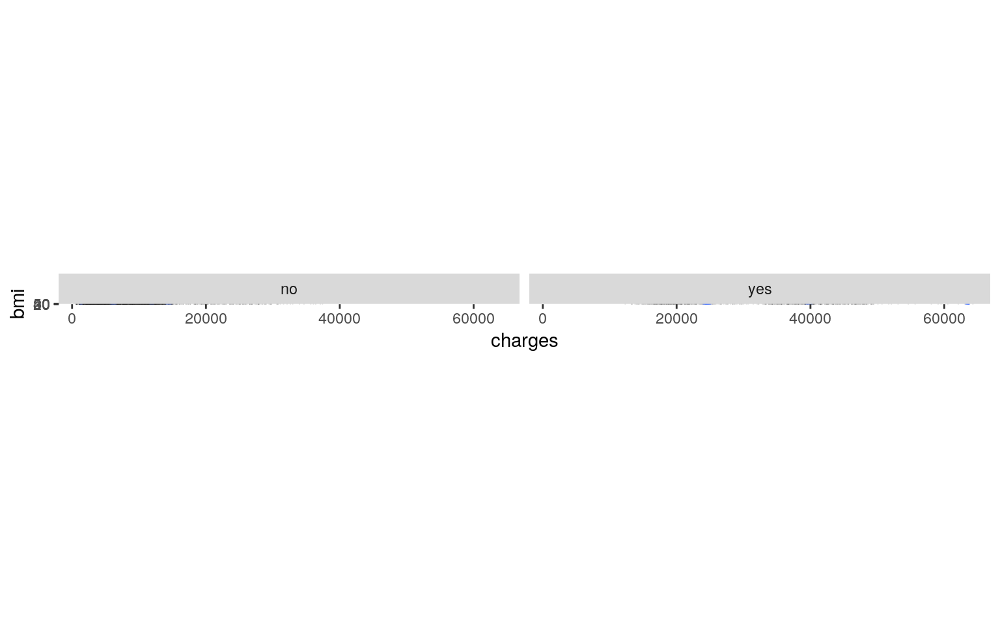
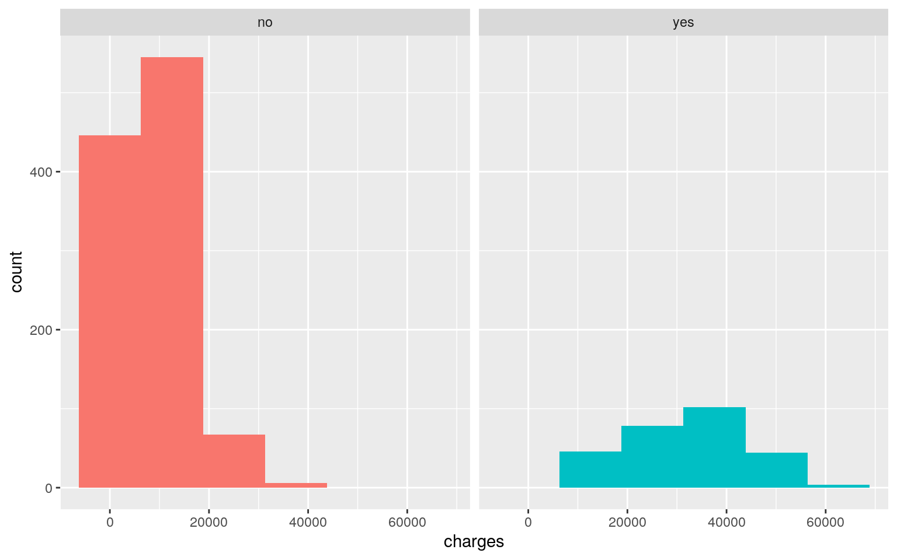
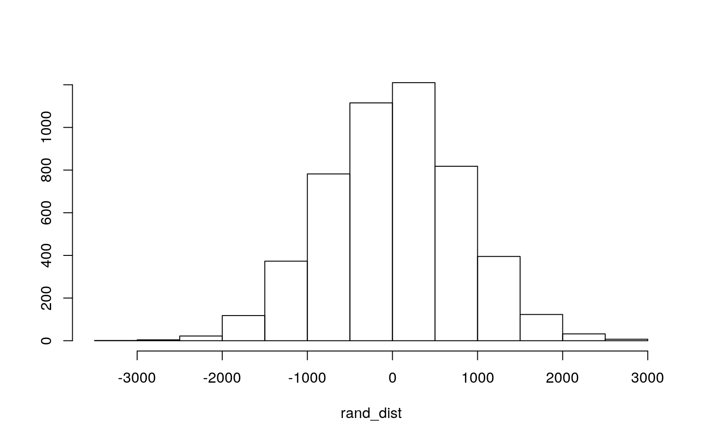
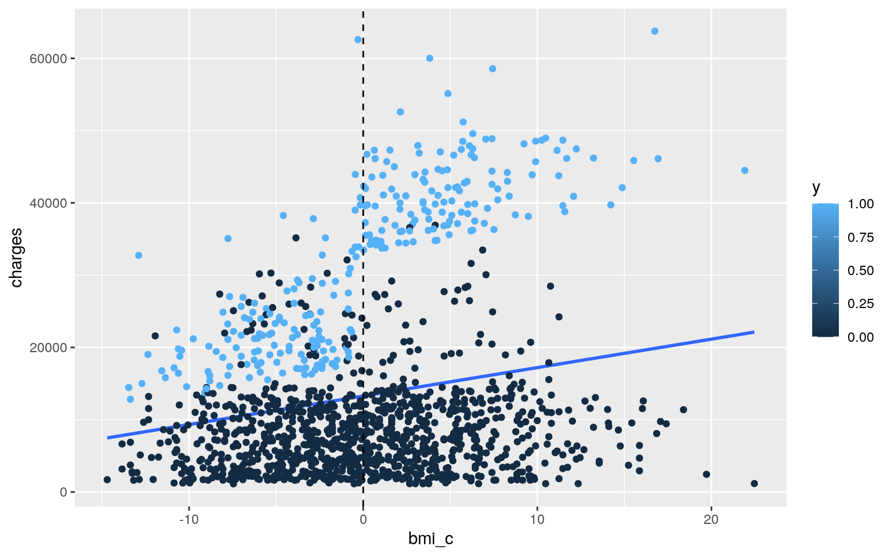
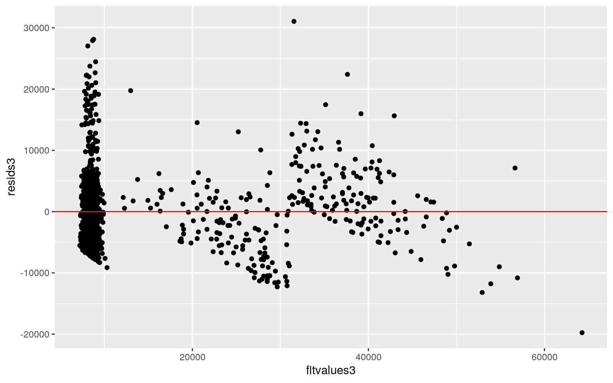
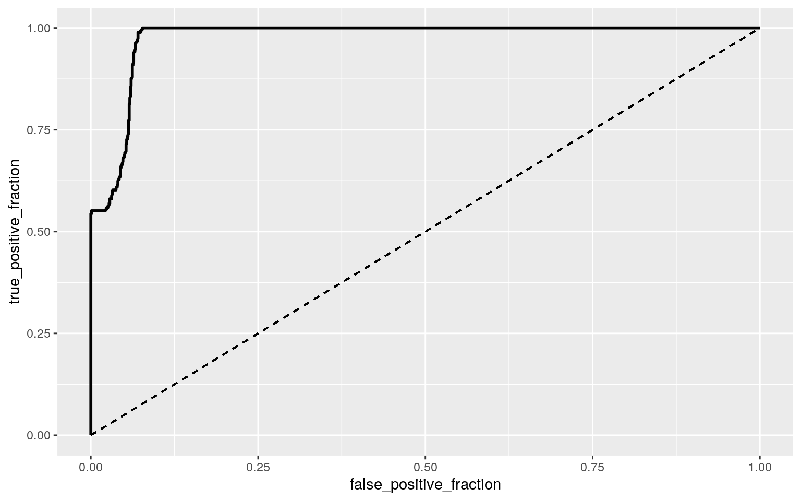
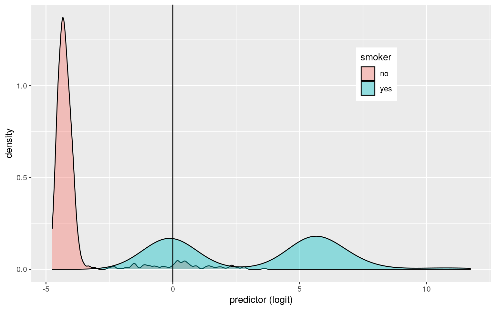

class_diag <- function(probs,truth){
#CONFUSION MATRIX: CALCULATE ACCURACY, TPR, TNR, PPV
if(is.character(truth)==TRUE) truth<-as.factor(truth)
if(is.numeric(truth)==FALSE & is.logical(truth)==FALSE) truth<-as.numeric(truth)-1
tab<-table(factor(probs>.5,levels=c("FALSE","TRUE")),factor(truth, levels=c(0,1)))
acc=sum(diag(tab))/sum(tab)
sens=tab[2,2]/colSums(tab)[2]
spec=tab[1,1]/colSums(tab)[1]
ppv=tab[2,2]/rowSums(tab)[2]
#CALCULATE EXACT AUC
ord<-order(probs, decreasing=TRUE)
probs <- probs[ord]; truth <- truth[ord]
TPR=cumsum(truth)/max(1,sum(truth))
FPR=cumsum(!truth)/max(1,sum(!truth))
dup <-c(probs[-1]>=probs[-length(probs)], FALSE)
TPR <-c(0,TPR[!dup],1); FPR<-c(0,FPR[!dup],1)
n <- length(TPR)
auc <- sum( ((TPR[-1]+TPR[-n])/2) * (FPR[-1]-FPR[-n]))
data.frame(acc,sens,spec,ppv,auc)
}library(mvtnorm)
library(ggplot2)
library(dplyr)
library(tidyverse)
library(lmtest)
library(glmnet)This project looks at US Health Insurance. The data set used in this project “insurance” looks at the relationship between Insurance Premium Charges in US with important details for risk underwriting including: age, sex, BMI, Number of dependent children on insurance plan, and whether or not the individual who holds the account smokes. This data set was obtained from Kaggle, an online community of data scientists and machine learning practitioners, and can be found here : https://www.kaggle.com/teertha/ushealthinsurancedataset?select=insurance.csv
The insurance data set has 7 identifying variables and 1338 observations. The identifying variables include: age (18-64), sex (male or female), bmi (body mass index - ranging from 15.960 to 53.130), children (number of dependents), smoker (yes or no), region (residential area of the beneficiary) and charges (individual medical costs billed by the health insurance).
Since smoking is one of the main contributors to other health related diseases I would like to focus on its effects in this data set.
Side note: According to CDC, BMI is a measure of a person’s weight in kilograms divided by the square of height in meters. BMI is often used to screen for weight categories that may lead to health problems. A BMI greater than 25 is considered overweight and a BMI greater than 30 is considered obese.
insurance <- read_csv("insurance.csv")
head(insurance)## # A tibble: 6 x 7
## age sex bmi children smoker region charges
## <dbl> <chr> <dbl> <dbl> <chr> <chr> <dbl>
## 1 19 female 27.9 0 yes southwest 16885.
## 2 18 male 33.8 1 no southeast 1726.
## 3 28 male 33 3 no southeast 4449.
## 4 33 male 22.7 0 no northwest 21984.
## 5 32 male 28.9 0 no northwest 3867.
## 6 31 female 25.7 0 no southeast 3757.insurance %>% na.omit()## # A tibble: 1,338 x 7
## age sex bmi children smoker region charges
## <dbl> <chr> <dbl> <dbl> <chr> <chr> <dbl>
## 1 19 female 27.9 0 yes southwest 16885.
## 2 18 male 33.8 1 no southeast 1726.
## 3 28 male 33 3 no southeast 4449.
## 4 33 male 22.7 0 no northwest 21984.
## 5 32 male 28.9 0 no northwest 3867.
## 6 31 female 25.7 0 no southeast 3757.
## 7 46 female 33.4 1 no southeast 8241.
## 8 37 female 27.7 3 no northwest 7282.
## 9 37 male 29.8 2 no northeast 6406.
## 10 60 female 25.8 0 no northwest 28923.
## # … with 1,328 more rows#creating a dicotomous outcome $y$ for variable "smoker" where response 'yes'=1 and 'no'=0
insurance<-insurance%>%mutate(y=ifelse(smoker=="yes",1,0))
insurance## # A tibble: 1,338 x 8
## age sex bmi children smoker region charges y
## <dbl> <chr> <dbl> <dbl> <chr> <chr> <dbl> <dbl>
## 1 19 female 27.9 0 yes southwest 16885. 1
## 2 18 male 33.8 1 no southeast 1726. 0
## 3 28 male 33 3 no southeast 4449. 0
## 4 33 male 22.7 0 no northwest 21984. 0
## 5 32 male 28.9 0 no northwest 3867. 0
## 6 31 female 25.7 0 no southeast 3757. 0
## 7 46 female 33.4 1 no southeast 8241. 0
## 8 37 female 27.7 3 no northwest 7282. 0
## 9 37 male 29.8 2 no northeast 6406. 0
## 10 60 female 25.8 0 no northwest 28923. 0
## # … with 1,328 more rowsTo begin this project I ran a MANOVA test on my variables.
#manova
manova_ins <- manova(cbind(age, bmi, children, charges) ~ smoker, data = insurance)
summary(manova_ins)## Df Pillai approx F num Df den Df Pr(>F)
## smoker 1 0.71574 839.1 4 1333 < 2.2e-16 ***
## Residuals 1336
## ---
## Signif. codes: 0 '***' 0.001 '**' 0.01 '*' 0.05 '.' 0.1
' ' 1#univariate manova
summary.aov(manova_ins)## Response age :
## Df Sum Sq Mean Sq F value Pr(>F)
## smoker 1 165 165.20 0.8368 0.3605
## Residuals 1336 263760 197.43
##
## Response bmi :
## Df Sum Sq Mean Sq F value Pr(>F)
## smoker 1 1 0.699 0.0188 0.891
## Residuals 1336 49720 37.215
##
## Response children :
## Df Sum Sq Mean Sq F value Pr(>F)
## smoker 1 0.11 0.11439 0.0787 0.7792
## Residuals 1336 1942.83 1.45421
##
## Response charges :
## Df Sum Sq Mean Sq F value Pr(>F)
## smoker 1 1.2152e+11 1.2152e+11 2177.6 < 2.2e-16 ***
## Residuals 1336 7.4554e+10 5.5804e+07
## ---
## Signif. codes: 0 '***' 0.001 '**' 0.01 '*' 0.05 '.' 0.1
' ' 1insurance %>% group_by(smoker) %>% summarize(mean(age),
mean(bmi), mean(children), mean(charges))## # A tibble: 2 x 5
## smoker `mean(age)` `mean(bmi)` `mean(children)`
`mean(charges)`
## <chr> <dbl> <dbl> <dbl> <dbl>
## 1 no 39.4 30.7 1.09 8434.
## 2 yes 38.5 30.7 1.11 32050.#pairwise T test
pairwise.t.test(insurance$charges, insurance$smoker, p.adj = "none")##
## Pairwise comparisons using t tests with pooled SD
##
## data: insurance$charges and insurance$smoker
##
## no
## yes <2e-16
##
## P value adjustment method: noneI used a one way MANOVA to test the effect of smoking on four numeric variables: age, bmi, children and charges. From the results of the MANOVA there was a significant difference reported for these variables: Pillai trace = 0.71574, pseudo F(1,1336) = 839.1, p<0.0001.
I also used a Univariate ANOVA following the MANOVA to determine the effect of each dependent variable. The Boneferi method was used for controlling Type one error rates. The univariate ANOVA for the numeric variable ‘charges’ was reported as significant: F(1,1336) = 2177.6, p<0.0001.
The Post-hoc Analysis was performed by a pairwise t-test.
#0.05/1 MANOVA + 2 ANOVA + 10 t-tests
#probability of at least one type I error
1 - 0.95^13## [1] 0.4866579# Bonferroni Correction
0.05/13## [1] 0.003846154I performed 1 MANOVA, 2 ANOVAS, and 10 pairwise t-tests so I was able to calculate the bonferroni significant level, which was α=0.003846154. The probability of one at least one type one error is 0.4866579. The ‘charges’ numeric variable is still considered significant after finding bonferroni corrected significance level.
ggplot(insurance, aes(x=charges, y=bmi)) + geom_point(alpha = 0.5) + geom_density_2d(h=2) + coord_fixed() + facet_wrap(~smoker)
Next, I performed a randomization test on my model to determine the effect of my variables on the response of smoking.
I first visualized the effects using ggplot:
ggplot(insurance,aes(charges,fill=smoker))+geom_histogram(bins=6.5)+
facet_wrap(~smoker,ncol=2)+theme(legend.position="none")
insurance %>% group_by(smoker) %>% summarize(means = mean(charges)) %>%
summarize(`mean_difference:` = diff(means)) %>% glimpse()## Rows: 1
## Columns: 1
## $ `mean_difference:` <dbl> 23615.96rand_dist<-vector()
for(i in 1:5000){
new<-data.frame(charges=sample(insurance$charges),smoker=insurance$smoker)
rand_dist[i]<-mean(new[new$smoker=="yes",]$charges)-
mean(new[new$smoker=="no",]$charges)}
{hist(rand_dist,main="",ylab=""); abline(v = c(-23615.96, 23615.96),col="red")}
mean(rand_dist>23615.96| rand_dist < -23615.96) #pvalue: fail to reject H0!## [1] 0In this model null hypothesis is that the true mean of health insurance charges is the same for non-smokers and smokers. The alternative hypothesis is the means of insurance charges for smokers and non-smokers differ.
After I conducted an ANOVA/Fstat test, I found that the p-value for mean(Fs>obs_F) was 0. This means none of our 5000 F stats generated under the null hypothesis were bigger than our actual F stat and means that the null hypothesis was rejected and that the two categories of smokers does have different charges for health insurance.
Next, I perfomed a linear regression model:
library(sandwich)
library(lmtest)
insurance$bmi_c <- insurance$bmi - mean(insurance$bmi)
fit3 <- lm(charges ~ y * bmi_c, data = insurance)
summary(fit3)##
## Call:
## lm(formula = charges ~ y * bmi_c, data = insurance)
##
## Residuals:
## Min 1Q Median 3Q Max
## -19768.0 -4400.7 -869.5 2957.7 31055.9
##
## Coefficients:
## Estimate Std. Error t value Pr(>|t|)
## (Intercept) 8435.24 188.87 44.661 < 2e-16 ***
## y 23548.63 417.37 56.421 < 2e-16 ***
## bmi_c 83.35 31.27 2.666 0.00778 **
## y:bmi_c 1389.76 66.78 20.810 < 2e-16 ***
## ---
## Signif. codes: 0 '***' 0.001 '**' 0.01 '*' 0.05 '.' 0.1
' ' 1
##
## Residual standard error: 6161 on 1334 degrees of freedom
## Multiple R-squared: 0.7418, Adjusted R-squared: 0.7412
## F-statistic: 1277 on 3 and 1334 DF, p-value: < 2.2e-16In this portion of the project, I looked at linear regression model predicting evidence of smoking (y) from response variables BMI and charges with interactions. I first centered my response variable BMI.
The model showed that the predicted charges for health insurance for individuals who are smokers with average bmi is 1389.76, and for smokers without average bmi the estimate is 23548.63.
ggplot(insurance, aes(bmi_c, charges, color = `y`)) +
geom_smooth(method = "lm", se = F, fullrange = T) + geom_point() +
geom_vline(xintercept = 0, lty = 2)
To determine the linearity, normality and homeskedacity of the model; I graphed the residuals to the fitted values. The plot showed that the linearity and homeskedacity were not good, which makes sense since the normality (ks.test) has a p-value less than 0.05 meaning that the data shows significant effects and the null hypothesis that the distribution is normal must be rejected.
#What proportion of the variation in the outcome does your model explain?
summary(fit3)$r.sq## [1] 0.741771#linearity
resids3 <- fit3$residuals
fitvalues3 <- fit3$fitted.values
ggplot() + geom_point(aes(fitvalues3, resids3)) + geom_hline(yintercept = 0,
col = "red")
#Breush-Pagan Test
bptest(fit3)##
## studentized Breusch-Pagan test
##
## data: fit3
## BP = 6.9014, df = 3, p-value = 0.07511#One-sample Kolmogorov-Smirnov test
ks.test(resids3, "pnorm", sd = sd(resids3))##
## One-sample Kolmogorov-Smirnov test
##
## data: resids3
## D = 0.075177, p-value = 5.407e-07
## alternative hypothesis: two-sided#T-test of coefficients
summary(fit3)##
## Call:
## lm(formula = charges ~ y * bmi_c, data = insurance)
##
## Residuals:
## Min 1Q Median 3Q Max
## -19768.0 -4400.7 -869.5 2957.7 31055.9
##
## Coefficients:
## Estimate Std. Error t value Pr(>|t|)
## (Intercept) 8435.24 188.87 44.661 < 2e-16 ***
## y 23548.63 417.37 56.421 < 2e-16 ***
## bmi_c 83.35 31.27 2.666 0.00778 **
## y:bmi_c 1389.76 66.78 20.810 < 2e-16 ***
## ---
## Signif. codes: 0 '***' 0.001 '**' 0.01 '*' 0.05 '.' 0.1
' ' 1
##
## Residual standard error: 6161 on 1334 degrees of freedom
## Multiple R-squared: 0.7418, Adjusted R-squared: 0.7412
## F-statistic: 1277 on 3 and 1334 DF, p-value: < 2.2e-16coeftest(fit3, vcov = vcovHC(fit3))##
## t test of coefficients:
##
## Estimate Std. Error t value Pr(>|t|)
## (Intercept) 8435.235 183.360 46.0037 < 2.2e-16 ***
## y 23548.630 453.102 51.9721 < 2.2e-16 ***
## bmi_c 83.351 28.610 2.9134 0.003635 **
## y:bmi_c 1389.756 78.604 17.6806 < 2.2e-16 ***
## ---
## Signif. codes: 0 '***' 0.001 '**' 0.01 '*' 0.05 '.' 0.1
' ' 1I then computed regression statistics/results with robust standard errors using “coeftest(…, vcov=vcovHC(…))”. The values are the same from with that of the original regression model therefore the interpretation of the coefficients still are valid. However a value that did change was for the significane value for average BMI. The significane response values remain less than 0.05 as they did in the original model however, for average bmi the signifance level changed from 0.00778 to 0.003635.
The original model and the recomputed model, estimate for y:bmi_c is less than 0.05 and is significant.
Finally, 0.741771 is the proportion of the variation in the outcome explained by the model.
Next, I performed a linear regression with bootstraps:
fit3 <- lm(charges ~ y * bmi_c, data = insurance)
resids3 <- fit3$residuals #save residuals
fitted3 <- fit3$fitted.values #save yhats
resid_resamp <- replicate(5000, {
new_resids <- sample(resids3, replace = TRUE) #resample resids w/ replacement
insurance$new_y <- fitted3 + new_resids #add new resids to yhats to get new 'data'
fit_i <- lm(new_y ~ y * bmi_c, data = insurance) #refit model
coef(fit_i) #save coefficient estimates (b0, b1, etc)
})
# standard deviation (the 0s)
resid_resamp %>% t %>% as.data.frame %>% summarize_all(sd)## (Intercept) y bmi_c y:bmi_c
## 1 186.4877 419.0677 31.35934 66.76622Comparing the original standard errors, robust errors, and boostrapped errors it appears they are all relatively the same — speaking more thoroughly however the bootstrapped errors for (Intercept), bechdel_binaryTRUE, runtime_c, and bechdel_binaryTRUE:runtime_c are, respectively, higher than the normal and robust, lower than robust, lower than normal, and higher than the normal and robust.
# comparison
coeftest(fit3)[, 1:2] #not normal?## Estimate Std. Error
## (Intercept) 8435.23531 188.87079
## y 23548.63007 417.37433
## bmi_c 83.35056 31.26854
## y:bmi_c 1389.75570 66.78297#Robust SES standard errors
coeftest(fit3, vcov = vcovHC(fit3))[, 1:2] ## Estimate Std. Error
## (Intercept) 8435.23531 183.36000
## y 23548.63007 453.10158
## bmi_c 83.35056 28.60982
## y:bmi_c 1389.75570 78.60354After comparing the orignal standard, roust and bootstrapped errors, I found that the bootstrapped errors are not quite similar, the bootstrapped errors are larger than the robust errors.
In this portion of the project, I predicted my dichotomous y variable (smoker vs non-smoker) from the variables sex, age and charges (without interaction).
glmfit <- glm(y ~ sex + age + charges, data = insurance,
family = "binomial")
coeftest(glmfit)##
## z test of coefficients:
##
## Estimate Std. Error z value Pr(>|z|)
## (Intercept) -3.0466e+00 4.2173e-01 -7.2241 5.045e-13 ***
## sexmale 1.9928e-01 2.5676e-01 0.7761 0.4377
## age -8.6003e-02 1.0638e-02 -8.0848 6.228e-16 ***
## charges 2.9471e-04 1.9252e-05 15.3078 < 2.2e-16 ***
## ---
## Signif. codes: 0 '***' 0.001 '**' 0.01 '*' 0.05 '.' 0.1
' ' 1# log-odds scale coefs
coef(glmfit) %>% round(5) %>% data.frame## .
## (Intercept) -3.04661
## sexmale 0.19928
## age -0.08600
## charges 0.00029# odds scale coefs (multiplicative)
coef(glmfit) %>% exp %>% round(5) %>% data.frame## .
## (Intercept) 0.04752
## sexmale 1.22052
## age 0.91759
## charges 1.00029The glm test shows that the predicted odds for an individual to be a smoker when the other variables are 0 is 0.04752. From the coefficients results, when the variables (age, sex, and charges) are held constant
In examining the rating coefficients, it can be seen that sex when male multiplies odds by a factor 1.22052, age multiplies odds by a factor of 0.91759, and charges multiplies odds by a factor of 1.00029.
Next, I ran a confusin matrix to determine the sensitivity(TPR), specificity (TNR), precision (PPV) and the AUC.
# confusion matrix
prob <- predict(glmfit, type = "response") #save predicted probabilities
pred <- ifelse(prob > 0.5, TRUE, FALSE)
table(prediction = pred, truth = insurance$y) %>%
addmargins## truth
## prediction 0 1 Sum
## FALSE 1005 73 1078
## TRUE 59 201 260
## Sum 1064 274 1338#TPR
201/274## [1] 0.7335766#TNR
1005/1064## [1] 0.9445489#PPV
201/260## [1] 0.7730769The sensitivity for this dataset (probality of smoking) is 201/274 = 0.7335766. The specificity (probability of falsely detecting a non-smoker) is 1005/1064 = 0.9445489. The PPV for this dataset (the proportion of individuals who classify as smokers who actually are) is 201/260 = 0.7730769.
The AUC, the measurement that measures how well the predicition is overall, was found by first creating a ROC plot then by running calc_auc on the ROC plot.
# calculation of AUC (as stated to do in points 3 and 5 of
# instruction #6) and creation of ROC plot
library(plotROC)
ROCplot <- ggplot(insurance) + geom_roc(aes(d = y,
m = prob), n.cuts = 0) + geom_segment(aes(x = 0, xend = 1,
y = 0, yend = 1), lty = 2)
ROCplot
calc_auc(ROCplot)## PANEL group AUC
## 1 1 -1 0.9759189From the results of the AUC test I saw that our data has a really good fit (AUC = 0.9759189). With this, I can conclude that the model has discrimination between smokers and non-smokers which is also supported by the logit plot (below).
# logit plot
insurance$logit <- predict(glmfit, type = "link")
insurance %>% ggplot(aes(logit, fill = smoker)) +
geom_density(alpha = 0.4) + theme(legend.position = c(0.75,
0.75)) + geom_vline(xintercept = 0) + xlab("predictor (logit)")
For the last portion of the project, I performed a logistic regression as previously completed but with measuring all response variables.
head(insurance)## # A tibble: 6 x 10
## age sex bmi children smoker region charges y bmi_c logit
## <dbl> <chr> <dbl> <dbl> <chr> <chr> <dbl> <dbl> <dbl>
<dbl>
## 1 19 female 27.9 0 yes southwest 16885. 1 -2.76 0.295
## 2 18 male 33.8 1 no southeast 1726. 0 3.11 -3.89
## 3 28 male 33 3 no southeast 4449. 0 2.34 -3.94
## 4 33 male 22.7 0 no northwest 21984. 0 -7.96 0.794
## 5 32 male 28.9 0 no northwest 3867. 0 -1.78 -4.46
## 6 31 female 25.7 0 no southeast 3757. 0 -4.92 -4.61ins <- insurance %>% select(-c("bmi_c", "logit","smoker"))
fit8 <- glm(y ~., data = ins, family = "binomial")
coeftest(fit8)##
## z test of coefficients:
##
## Estimate Std. Error z value Pr(>|z|)
## (Intercept) 5.50343158 1.07308863 5.1286 2.919e-07 ***
## age -0.10057901 0.01331266 -7.5551 4.184e-14 ***
## sexmale 0.54784585 0.30179340 1.8153 0.06948 .
## bmi -0.37077591 0.04622992 -8.0203 1.055e-15 ***
## children -0.24393817 0.12779894 -1.9088 0.05629 .
## regionnorthwest 0.14587682 0.39845914 0.3661 0.71429
## regionsoutheast 0.64194450 0.42059154 1.5263 0.12694
## regionsouthwest 0.31997422 0.43860613 0.7295 0.46568
## charges 0.00039342 0.00003114 12.6337 < 2.2e-16 ***
## ---
## Signif. codes: 0 '***' 0.001 '**' 0.01 '*' 0.05 '.' 0.1
' ' 1exp(coef(fit8))## (Intercept) age sexmale bmi children regionnorthwest
## 245.5330551 0.9043137 1.7295233 0.6901986 0.7835361
1.1570537
## regionsoutheast regionsouthwest charges
## 1.9001722 1.3770923 1.0003935# confusion matrix
probs2 <- predict(fit8, type = "response")
class_diag(probs2, ins$y)## acc sens spec ppv auc
## 1 0.9603886 0.9452555 0.9642857 0.8720539 0.9865094summary(fit8)##
## Call:
## glm(formula = y ~ ., family = "binomial", data = ins)
##
## Deviance Residuals:
## Min 1Q Median 3Q Max
## -3.3000 -0.1014 -0.0388 -0.0084 1.3532
##
## Coefficients:
## Estimate Std. Error z value Pr(>|z|)
## (Intercept) 5.503e+00 1.073e+00 5.129 2.92e-07 ***
## age -1.006e-01 1.331e-02 -7.555 4.18e-14 ***
## sexmale 5.478e-01 3.018e-01 1.815 0.0695 .
## bmi -3.708e-01 4.623e-02 -8.020 1.06e-15 ***
## children -2.439e-01 1.278e-01 -1.909 0.0563 .
## regionnorthwest 1.459e-01 3.985e-01 0.366 0.7143
## regionsoutheast 6.419e-01 4.206e-01 1.526 0.1269
## regionsouthwest 3.200e-01 4.386e-01 0.730 0.4657
## charges 3.934e-04 3.114e-05 12.634 < 2e-16 ***
## ---
## Signif. codes: 0 '***' 0.001 '**' 0.01 '*' 0.05 '.' 0.1
' ' 1
##
## (Dispersion parameter for binomial family taken to be 1)
##
## Null deviance: 1356.63 on 1337 degrees of freedom
## Residual deviance: 302.57 on 1329 degrees of freedom
## AIC: 320.57
##
## Number of Fisher Scoring iterations: 8The logistic regression using Binary variables had results as follows: acc= 0.9603886 which shows accurate predicting, sens= 0.9452555 , spec=0.9642857, ppv=0.8720539, and AUC=0.9865094. From these results I can conclude that the model is a great fit for the predicted probabilities of evidence of Smoking.
Next I ran 10 fold CV model:
set.seed(348)
k = 10
data <- ins[sample(nrow(ins)), ]
folds <- cut(seq(1:nrow(ins)), breaks = k, labels = F)
diags <- NULL
for (i in 1:k) {
train <- data[folds != i, ]
test <- data[folds == i, ]
truth <- test$y
fit <- glm(y~., data = train, family = "binomial")
probs_2 <- predict(fit, newdata = test, type = "response")
diags <- rbind(diags, class_diag(probs_2, truth))
}
summarize_all(diags, mean)## acc sens spec ppv auc
## 1 0.9574122 0.923697 0.9643122 0.8690135 0.9856555The 10-fold CV model’s acc=0.9574122, sens=0.0.923697, spec=0.0.9643122, ppv=0.8690135, and AUC= 0.9856555. The AUC is still good and when compared to original logistic regression AUC remains relatively the same.
Next I preformed LASSO and subsequently another 10-fold CV model on the findings from LASSO:
#Performing LASSO on the same model/variables. Choosing lambda to give the simplest model whose accuracy is near that of the best (i.e., `lambda.1se`). Discuss which variables are retained.
# LASSO
library(glmnet)
I_matrix <- as.matrix(ins$y)
insurance_preds <- model.matrix(y ~., data = ins)[, -1]
insurance_cv <- cv.glmnet(insurance_preds, I_matrix, family = "binomial")
lasso_fit <- glmnet(insurance_preds, I_matrix, family = "binomial",
lambda = insurance_cv$lambda.1se)
coef(lasso_fit)## 9 x 1 sparse Matrix of class "dgCMatrix"
## s0
## (Intercept) 2.5629071973
## age -0.0672485533
## sexmale 0.1256564940
## bmi -0.2259411227
## children -0.0596691217
## regionnorthwest .
## regionsoutheast 0.0821620891
## regionsouthwest .
## charges 0.0002922594#Performing another 10-fold CV using only selected
set.seed(1234)
k = 10
data2 <- ins %>% sample_frac #put rows of dataset in random order
folds2 <- ntile(1:nrow(data2), n = 10) #create fold labels
diags2 <- NULL
for (i in 1:k) {
## Create training and test sets
train2 <- data2[folds2 != i, ]
test2 <- data2[folds2 == i, ]
truth2 <- test2$y ## Truth labels for fold i
glmfit2 <- glm(y ~ age + sex + bmi + children + region + charges,
data = ins, family = "binomial")
probably <- predict(glmfit2, newdata = test2, type = "response")
## Get diagnostics for fold i
diags2 <- rbind(diags2, class_diag(probably, truth2))
}
diags2 %>% summarize_all(mean)## acc sens spec ppv auc
## 1 0.9604085 0.9471491 0.9644623 0.8752178 0.9872734The variables retained from the LASSO were age, sex (male), bmi, children, region (southeast) and charges. The lasso regression cv showed acc=0.9604085, sens=0.9471491, spec=0.9644623 and ppv= 0.8752178. The AUC of the lasso regression is 0.9872734, which shows the this model is relatively the same but nevertheless greater when compared to past AUC, since it is now at the highest.
The out-of-sample AUC of the 10-fold CV of the lasso variables selected is 0.9580952. When comparing the AUC to the logistic regression above it is higher but lower than lasso regression cv.
From this project I can conclude that the major variable that has an effect on the intensity of health insurance charges is for that of smokers. If an individual smokes, they are predicted to be charged more by insurance companies.